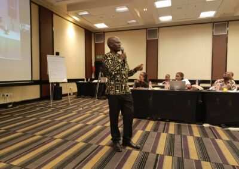
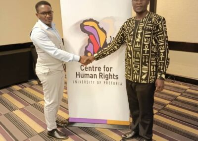

Promoting Intersex Rights in Africa: A Recap of Commissioner Wamalwa's Facitation Training in Pretoria, South Africa.

Date: November 24, 2023
Location: Southern Sun, Pretoria, South Africa
Introduction 
On the 24th of November, 2023, the Southern Sun in Pretoria hosted a pivotal session on human rights advocacy. The training, led by Commissioner Dr. Dennis Wamalwa, was part of an initiative to implement Resolution 552, focusing on the rights and protections of intersex individuals in Africa. Distinguished guests included Mphatso Sakala, Executive Director of the Intersex Society of Zambia, and Lydia from the Witness Protection Agency in Kenya.
With a Kenyan colleague Lydia from Witness Protection Agency
Commissioner Wamalwa's Address 
Commissioner Wamalwa's presentation was a cornerstone of the training, offering a detailed account of the Kenya National Commission on Human Rights (KNCHR) and its role in enforcing Resolution 552. He discussed the KNCHR's establishment under the Act of 2002 and its compliance with the Paris Principles, underscoring its dual mandate to promote and protect human rights. The commissioner, together with KNCHR, represented all National Human Rights Institutions (NHRI) in the country.
Resolution 552 Implementation
Throughout his talk, Commissioner Wamalwa provided insights into the specific actions and accomplishments of the KNCHR regarding Resolution 552. He showcased the commission's strides in advocating for intersex rights, including the groundbreaking inclusion of an intersex marker in Kenya's 2019 census and the formation of the Intersex Task Force.
Challenges and Advocacy
The commissioner also highlighted the continuing challenges faced by intersex individuals, such as access to healthcare and education, legal recognition, and employment discrimination. He affirmed the KNCHR's dedication to addressing these issues through ongoing advocacy and policy work.
Recognition and Conclusion
The session concluded with Commissioner Wamalwa receiving a facilitation certificate, presented by the center's Director and Deputy Director Mr. Lloyd Kuveya. This accolade recognized his invaluable contributions to human rights education and the successful implementation of Resolution 552.
Closing Remarks
Commissioner Wamalwa reiterated the KNCHR's commitment to ensuring that human rights are respected, protected, and fulfilled for all, particularly for the intersex community. He called for solidarity and continuous effort to create an inclusive society where everyone's rights are recognized.